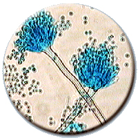
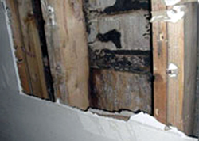

Mold Information
What is Mold
Molds are fungi. Molds grow throughout the natural and built environment. Tiny particles of mold are present in indoor and outdoor air. In nature, molds help break down dead materials and can be found growing on soil, foods, plant matter, and other items. Molds produce microscopic cells called "spores" which are very tiny and spread easily through the air. Live spores act like seeds, forming new mold growths (colonies) when they find the right conditions.
What does mold need to grow?
Mold only needs a few simple things to grow and multiply:
- Moisture
- Nutrients
- Suitable place to grow
Controlling excess moisture is key to preventing and stopping indoor mold growth.
Should I be concerned about mold in my home?
Mold should not be permitted to grow and multiply indoors. When this happens, health problems can occur and building materials, goods and furnishings may be damaged.
Health Effects
Can mold make me and my family sick?
Mold can affect the health of people who are exposed to it. People are mainly exposed to mold by breathing spores or other tiny fragments. People can also be exposed through skin contact with mold contaminants (for example, by touching moldy surfaces) and by swallowing it.The type and severity of health effects that mold may produce are usually difficult to predict. The risks can vary greatly from one location to another, over time, and from person to person.
What symptoms might I see?
The most common health problems caused by indoor mold are allergy symptoms. Although other and more serious problems can occur, people exposed to mold commonly report problems such as:
- Cough
- Sore throat
- Skin and eye irritation
- Nasal and sinus congestion
- Wheeze/breathing difficulties
- Upper respiratory infections (including sinus)
Are the risks greater for some people?
There is wide variability in how different people are affected by indoor mold. However, the long term presence of indoor mold growth may eventually become unhealthy for anyone. The following types of people may be affected more severely and sooner than others:
- Infants and children
- Elderly people
- Individuals with respiratory conditions or sensitivities such as allergies and asthma
- Persons having weakened immune systems (HIV, chemotherapy, organ transplant)
People with these special health concerns should consult a medical professional if they feel their health is affected by indoor mold.
Are some molds more hazardous than others?
Some types of mold can produce chemical compounds (called mycotoxins) although they do not always do so. Molds that are able to produce toxins are common. In some circumstances, the toxins produced by indoor mold may cause health problems. However, all indoor mold growth is potentially harmful and should be removed promptly, no matter what types of mold is present or whether it can produce toxins.
Home Investigation
How do I tell if I have a mold problem?
Investigate, don't test. The most practical way to find a mold problem is by using your eyes to look for mold growth and by using your nose to locate the source of a suspicious odor. If you see mold or if there is an earthy or musty smell, you should assume a mold problem exists. Other clues are signs of excess moisture or the worsening of allergy-like symptoms.
- Search areas with noticeable mold odors.
- Look for visible mold growth. May appear cottony, velvety, granular, or leathery and have varied colors of white, gray, brown, black, yellow, green. Mold often appears as discoloration, staining, or fuzzy growth on the surface of building materials or furnishings.When mold is visible, testing is not recommended.
- Look for signs of excess moisture or water damage. Look for water leaks, standing water, water stains, condensation problems. For example, do you see any watermarks or discoloration on walls, ceilings, carpet, woodwork or other building materials?
- Search behind and underneath materials (carpet and pad, wallpaper, vinyl flooring, sink cabinets), furniture, or stored items (especially things placed near outside walls or on cold floors). Sometimes destructive techniques may be needed to inspect and clean enclosed spaces where mold and moisture are hidden; for example, opening up a wall cavity.
Should I test for mold?
We do not recommend testing for mold yourself. Instead, you should simply assume there is a problem whenever you see mold or smell mold odors. Testing should never take the place of visual inspection and it should never use up resources that are needed to correct moisture problems and remove all visible growth. Sometimes, mold growth is hidden and difficult to locate. In such cases, a combination of air (outdoor and indoor air samples) and bulk (material) samples may help determine the extent of contamination and where cleaning is needed. However, mold testing is rarely useful for trying to answer questions about health concerns.
Mold Clean-up and Removal
To clean up and remove indoor mold growth, follow steps 1-6 as they apply to your home.
1.) Identify and fix the moisture problem - the most important step in solving a mold problem is to identify and correct the moisture sources that allowed the growth in the first place. Common indoor moisture sources include:
- Flooding
- Condensation - indoor humidity that is too high or surfaces that are too cold
- Roof leaks
- Plumbing leaks
- Humidifier use
- Firewood stored indoors
- Line drying laundry indoors
- Overflow from tubs, sinks, or toilets
- Improper venting of combustion appliances
- Movement through basement walls and slab
- Inadequate venting of kitchen and bath humidity
- Failure to vent clothes dryer exhaust outdoors - including electric dryers
- House plants - watering them can generate large amounts of moisture
To keep indoor surfaces as dry as possible, try to maintain the home's relative humidity between 20-40 percent in the winter and less than 60 percent the rest of the year. You can purchase devices to measure relative humidity at some home supply stores. Ventilation, air circulation near cold surfaces, dehumidification, and efforts to minimize the production of moisture in the home are all very important in controlling high humidity that frequently causes mold growth in our cold climate.
2.) Begin Drying All Wet Materials - as soon as possible, begin drying any materials that are wet. For severe moisture problems, use fans and dehumidifiers and move wet items away from walls and off floors. Check with equipment rental companies or restoration firms to see if you can rent fans and dehumidifiers.
3.) Remove and Dispose of Mold Contaminated Materials - items which have absorbed moisture (porous materials) and which have mold growing on them need to be removed, bagged and thrown out. Such materials may include sheet rock, insulation, plaster, carpet/carpet pad, ceiling tiles, wood products (other than solid wood), and paper products. Likewise, any such porous materials that have contacted sewage should also be bagged and thrown away. Non-porous materials with surface mold growth may be saved if they are cleaned well and kept dry.
4.) Clean Surfaces - surface mold growing on non-porous materials such as hard plastic, concrete, glass, metal, and solid wood can usually be cleaned. Cleaning must remove and capture the mold contamination, because dead spores and mold particles still cause health problems if they are left in place.
- Thoroughly scrub all contaminated surfaces using a stiff brush, hot water and a non-ammonia soap/detergent or commercial cleaner
- Collect excess cleaning liquid with a wet/dry vacuum, mop or sponge
- Rinse area with clean water and collect excess rinse water
5.) Disinfect Surfaces - after cleaning has removed all visible mold and other soiling from contaminated surfaces, a disinfectant may be used to kill mold missed by the cleaning. In the case of sewage contamination, disinfection must be performed. Contact your home inspector for advice.
- Mix 1/4 to 1/2 cup bleach per gallon of water and apply to surfaces where mold growth was visible before cleaning. The solution can be applied with a spray bottle, garden sprayer, it can be sponged on, or applied by other methods.
- Collect any run-off of bleach solution with a wet/ dry vacuum, sponge or mop. However, do not rinse or wipe the bleach solution off the areas being treated -- allow it to dry on the surface.
6.) Remain on Mold Alert - Continue looking for signs of moisture problems or return of mold growth. Be particularly alert to moisture in areas of past growth. If mold returns, repeat cleaning steps and consider using a stronger solution to disinfect the area again. Regrowth may signal that the material should be removed or that moisture is not yet controlled.
Take Steps to Protect Yourself
The amount of mold particles in air can increase greatly when mold is disturbed. Consider using protective equipment when handling or working around mold contaminated materials. The following equipment can help minimize exposure to mold:
- Rubber gloves
- Eye goggles
- Outer clothing (long sleeves and long pants) that can be easily removed in the work area and laundered or discarded
- Medium-efficiency or high-efficiency filter dust mask (these can be found at safety equipment suppliers, hardware stores, or some other large stores that sell home repair supplies) -- at a minimum, use an N-95 or equivalent dust mask
Take Steps to Protect Others
Plan and perform all work to minimize the amount of dust generated. The following actions can help minimize the spread of mold spores:
- Enclose all moldy materials in plastic (bags or sheets) before carrying through the home
- Hang plastic sheeting to separate the work area from the rest of the home
- Remove outer layer of work clothing in the work area and wash separately or bag
- Damp clean the entire work area to pick up settled contaminants in dust
When can we rebuild?
Rebuilding and refurnishing must wait until all affected materials have been cleaned, disinfected and dried completely. Be patient and provide as much ventilation as you possibly can, it can take quite some time to completely dry out wet building materials.